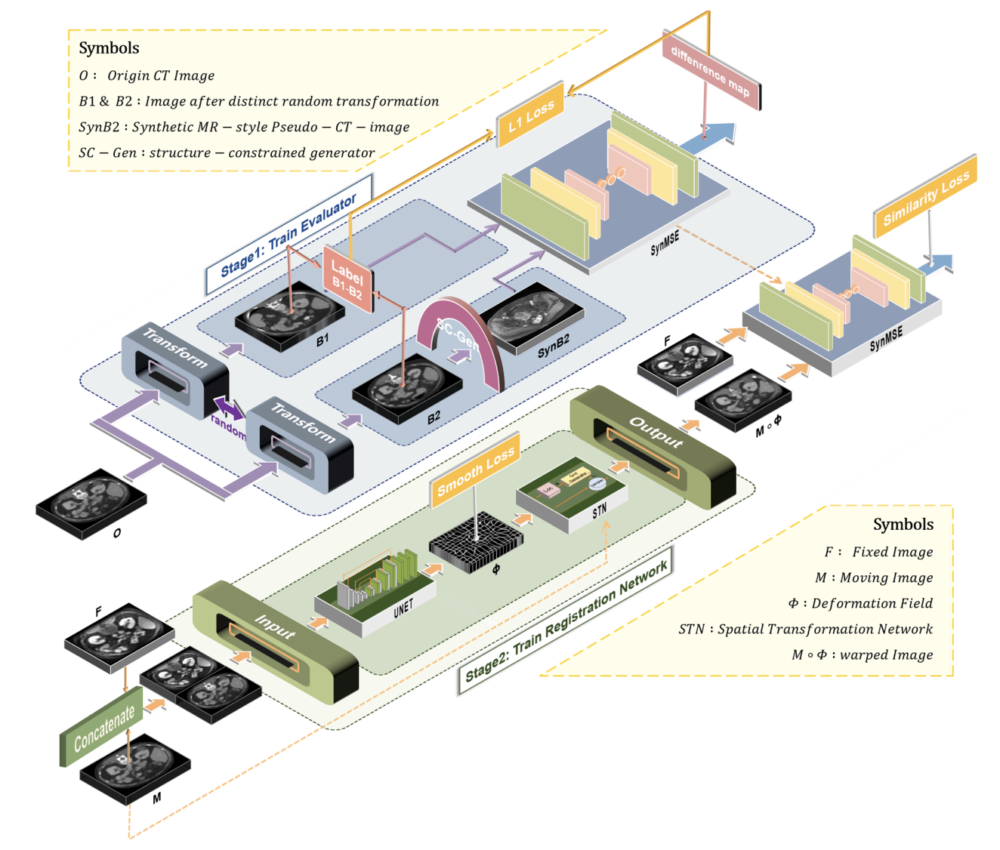
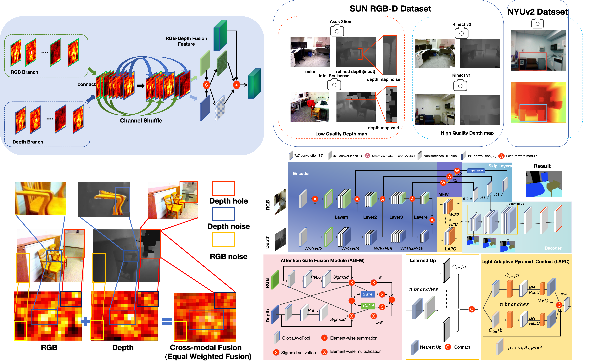
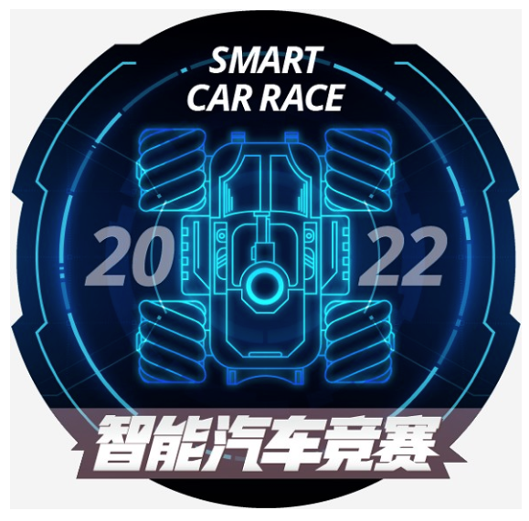

Bing(Baird) Xiong (熊 兵)Master Student @ SIAT
ShenZhen Institues of Advanced Technology(SIAT)
|
|

Short Bio
Hi! I am a second-year Master student of CS at The ShenZhen Institues of Advanced Technology (SIAT), under the supervision of Prof. Wenjian Qin. I obtained my B.Eng in Computer Science at Wuhan University of Technology in 2023. Currently, I am a research intern at Deepwise, supervised by Dr. Zhen Zhou and Prof.YiZhou Yu(IEEE Fellow) .
My research interests lie in the intersection of Computer Vision and Machine Learning. From 2022, I started to do some research on digital pathology and medical imaging. Now, I focus on designing novel applications for three dimension hitopathology reconstruction and medical image imaging and downstream task and virtual staining.
Feel free to contact me by email if you are interested in discussing or collaborating with me.
News
- [06/2025] Recipient of SIAT Pacemaker to Merit Student 2025.
- [01/2025] Recipient of SIAT Instrument Cheif Innovation Fund Scholarship - Student Award
- [01/2025] Recipient of SIAT 2024 Outstanding Student Scholarship - Grade 1
- [12/2024] Recipient of the SIAT 2024 Excellent Student Cadre Award
- [12/2024] Joined Deepwise Research as research intern. Started doing research on Medical Imaging !
- [12/2024] One paper are accepted by AAAI 2025 !
- [4/2024] One paper are accepted by Displays !
Education & Visiting

|
University of Chinese Academy of Sciences, China Master Student, supervised by Prof.Wenjian Qin Sep. 2023 - Jun. 2026(expected) |
|
|
University of Chinese Academy of Sciences, China Research Assistance, supervised by Prof.Wenjian Qin Nov. 2022 - Aug. 2023 |
|
Wuhan University of technology, China Bachelor of Intelligent Manufacturing Engineering Sep. 2019 - Jun. 2023
|
|
Publications | Full List

|
USIGAN: Unbalanced Self-Information Feature Transport for Weakly Paired Image IHC Virtual Staining Yue Peng*,Bing Xiong*, Fuqiang Chen,Deboch Eybo Abera, RanRan Zhang,Wangmin Hu,Jing Cai, Wenjian Qin (TIP), 2025. Under Review Co-first author |

|
Unpaired Multi-Domain Histopathology Virtual Staining using Dual Path Prompted Inversion
Bing Xiong, Yue Peng, Ranran Zhang,Fuqiang Chen, JiaYe He,Wenjian Qin†
AAAI 2025 [Arxiv]
|
|

|
SynMSE: A multimodal similarity evaluator for complex distribution discrepancy in unsupervised deformable multimodal medical image registration
JingKe Zhu,Boyun Zheng,Bing Xiong,Yuxin Zhang,Ming Cui,Deyu Sun,Jing Cai,Yaoqin Xie, Wenjian Qin
Medical Image Analysis (JCR Q1, IF=11.8) [Paper]
|
|

|
AGWNet: Attention-guided adaptive shuffle channel gate warped feature network for indoor scene RGB-D semantic segmentation
Bing Xiong, Yue Peng†, JingKe Zhu, Jia Gu, Zhen Chen, Wenjian Qin
Displays (JCR Q1, IF=4.2) [Paper]
|
Internship & Research Experience
|
Baidu Dec. 2024 - March. 2025, Research Intern Working with RDr. Zhen Zhou and Prof.YiZhou Yu(IEEE Fellow) |
Competition Awards (Selected)
|  |
National Finals of the National College Student Software Design Competition
第十四届"软件杯"大学生软件设计大赛智能遥感解译赛道 National Second Prize With Suo Ma et al.
|

|
National College Student Smart Car Competition
全国大学生智能车竞赛 National Second Price With Xiang Wen Luo et al.
|
Selected Honors & Awards
-
[05/2025] Recipient of Universty of Chinese Academy of Sciences Model Student of Outstanding Capacity
（中国科学院大学（UCAS）三好学生标兵，9 Students in the Institute）
-
[01/2025] Recipient of SIAT excellent student cadre
（深圳先进技术研究院（SIAT）优秀学生干部，22 Students in the Institute）
-
[01/2025] Recipient of SIAT Institute of Scientific Instrumentation Cheif Innovation Fund Scholarship - Student Award
（深圳先进技术研究院（SIAT）仪器所所长创新基金奖学金-优秀学生奖，1 Master Students in the Institute）
-
[01/2025] Recipient of SIAT Outstanding Student Scholarship - Grade 1
（深圳先进技术研究院（SIAT）优秀学生一等奖学金，10 Master Students in the Institue,SIAT）
-
[11/2024] UCAS 2024 Postgraduate Academic Forum Bay Area Forum Excellence Award
（中国科学院大学 2024 年研究生学术论坛（湾区论坛）优秀奖，8 Students in the Institue,SIAT）
-
[11/2024] National Scholarship of Shenzhen Institutes of Advanced Technology, UCAS
（中国科学院大学深圳先进技术研究院国家奖学金，Top 0.3% in ShenZhen Institute of Advanced Technology ）
-
[06/2023] Outstanding Undergraduate extracurricular training student of Wuhan University of Technology
（武汉理工大学本科生课外优秀训练学生）
-
[06/2023] Outstanding graduates of Wuhan University of Technology
（武汉理工大学优秀毕业生）
Clubs
（入选百度 PaddlePaddle Aistudio2022年 十大最具影响力开发者）
Invited Talk
-
2024.9.22 Talk at China Biomedical Engineering Conference & Medical Innovation Summit(BME2024)
Professional Services
-
Jounral Reviewer:
The International Journal of Research on Intelligent Systems for Real Life Complex Problems (Applied Intelligence)
-
Conference Reviewer:
International Joint Conference on Artificial Intelligence (IJCAI 2025)
Neural Information Processing Systems (NeurIPS 2024)
European Conference on Artificial Intelligence (ECAI 2025)